Reprezentati pe acelasi grafic functia f(x) = sin(x) si aproximantele T1f, T3f , ..., T11f pe intervalul [].
reset();
taylor(sin(x),x=0,11);
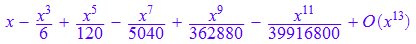
Tn:=(n,x)->taylor(sin(x),x=0,n);
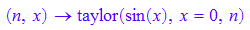
for i from 1 to 6 do
T[i]:=Tn(2*i-1,x):
end_for:
plotfunc2d(sin(x), T[k]$k=1..6,
x=-2*PI..2*PI, YRange=-3..3,
LineWidth=0.3,
XGridVisible=TRUE,
YGridVisible=TRUE,
XSubgridVisible=TRUE,
YSubgridVisible=TRUE,
Header="Function sin(x) and its Taylor polynomials",
HeaderFont=["Arial",12, Bold],
LegendVisible=TRUE,
BackgroundColor=RGB::Gray80,
BorderColor=RGB::Black,
BorderWidth=0.2
);
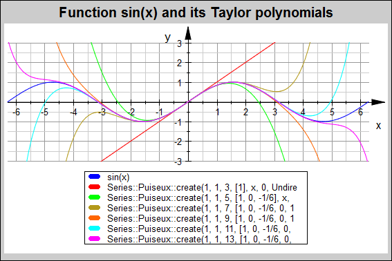
La fel pentru exp(x) si aproximantele T1, T2, ..., T5.
reset();
taylor(exp(x),x=0,7);
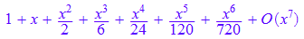
Te:=(n,x)->taylor(exp(x),x=0,n+1);
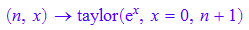
for i from 1 to 5 do
T[i]:=Te(i,x):
end_for:
plotfunc2d(exp(x), T[k]$k=1..5,
x=-1..3, YRange=-1..21,
LineWidth=0.3,
XGridVisible=TRUE,
YGridVisible=TRUE,
XSubgridVisible=TRUE,
YSubgridVisible=TRUE,
Header="Function exp(x) and its Taylor polynomials",
HeaderFont=["Arial",12, Bold],
LegendVisible=TRUE,
BackgroundColor=RGB::Gray80,
BorderColor=RGB::Black,
BorderWidth=0.2
);
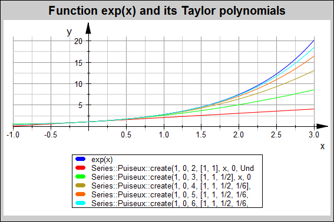
Deduceti seria Taylor pentru 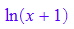si aproximati ln 2 folosind primii 8 termeni. Cati termeni sunt necesari pentru a obtine ln 2 cu 5 zecimale corecte? La fel pentru
taylor(ln(1+x),x=0,8);
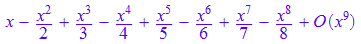
tln:=expr(%);
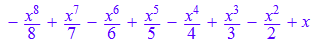
(tln) | x=1
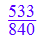
float(%);
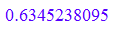
float(ln(2));

solve(1/(n+1)<1e-5,n);
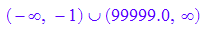
Totusi, in vecinatatea lui 0 lucrurile merg bine
(tln) | x=0.1
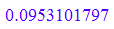
ln(1.1);
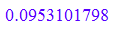
Imbunatatire 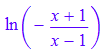
taylor(ln((1+x)/(1-x)),x=0,15);
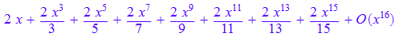
tln2:=expr(%);
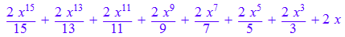
solve((1+x)/(1-x)=2,x); //aflam punctul
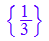
(tln2) | x=1/3;
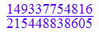
float(%);
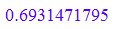
float(ln(2));

float(((1/3)^(2*n-1)/(2*n-1))|n=5);
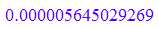
expr(taylor(ln((1+x)/(1-x)),x=0,7))| x=1/3;
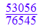
float(%);
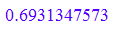
float(ln(2));